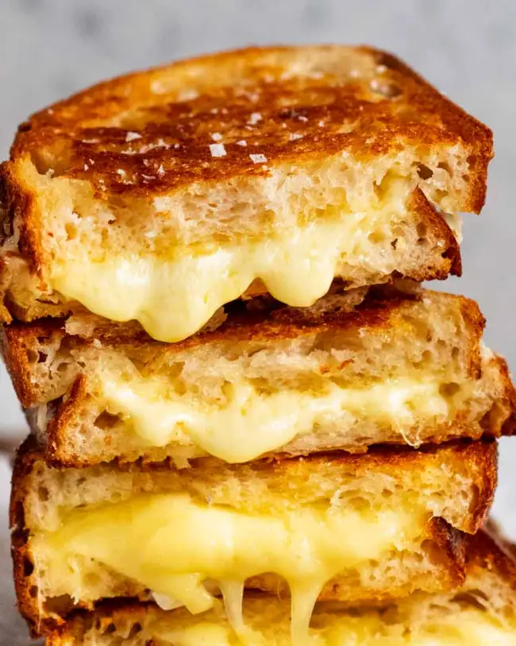

Grilled Cheese

Description
A grilled cheese (sometimes known as a toasted sandwich or cheese toastie) is a hot cheese sandwich typically prepared by heating slices of cheese between slices of bread with a cooking fat such as butter or mayonnaise on a frying pan, griddle, or sandwich toaster, until the bread browns and the cheese melts.
Ingredients
- 5 tbsp of softened butter
- 4 slices of sourdough bread
- 2 cups of shredded cheddar
Instructions
- Spread 1 tablespoon butter on one side of each slice of bread. With butter side down, top each slice of bread with about 1/2 cup of cheddar.
- In a skillet over medium heat, melt 1 tablespoon of butter. Add two slices of bread, butter side down. Cook until bread is golden and cheese is starting to melt, about 2 minutes. Flip one piece of bread on top of the other and continue to cook until cheese is melty, about 30 seconds more.
- Repeat for the second sandwich, wiping skillet if necessary.